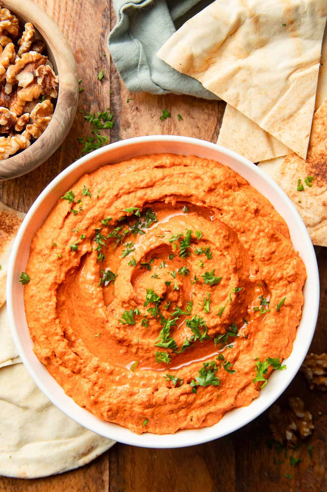

приготовление:
-
Слить жидкость из 1 банки запечённых красных перцев Peppadew. Не промывать перцы, а хорошо обсушить чистым полотенцем, чтобы намазка не получилась водянистой. Руками разорвать перцы на несколько частей.
-
Отложить 1–2 грецких ореха для подачи. Остальные орехи выложить на сухую сковороду и обжаривать на среднем огне около 3 минут до появления аромата.
-
Добавить к орехам 40 г панировочных сухарей и обжаривать всё вместе ещё около 3 минут, часто помешивая, пока сухари не станут золотистыми.
-
Переложить орехи с сухарями в кухонный комбайн, добавить 1 крупный или 2 обычных зубчика чеснока и измельчить в мелкую крошку.
-
Добавить обсушенные перцы, 3 ст. л. оливкового масла extra virgin, 2 ст. л. гранатовой мелассы, 0,5 ст. л. лимонного сока, 1–2 ч. л. перца Алеппо, 0,5 ч. л. молотого кумина и морскую соль. Вместо перца Алеппо можно взять хлопья красного перца в количестве от четверти до половины указанного объёма или использовать мягкий гочугару.
-
Измельчать импульсами, пока мухамара не станет почти однородной, но сохранит немного текстуры. Попробовать и при необходимости добавить ещё лимонного сока или соли.
-
Переложить мухамару в тарелку, сделать ложкой волны на поверхности и слегка полить оливковым маслом. Посыпать мелко нарезанными оставленными орехами и свежей мятой или петрушкой. Подавать с питой или хлебом.